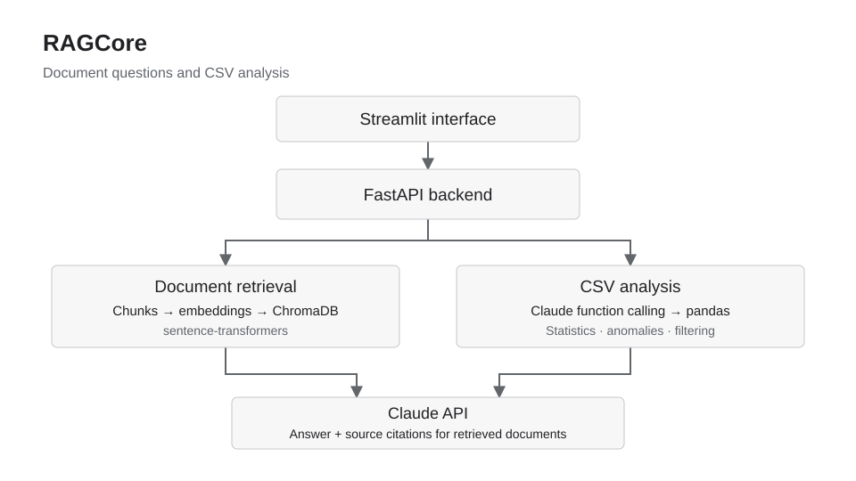

I work on video understanding and data analysis. I’m interested in how the data, model and software affect the result.
Personal project · document retrieval and analysis
RAGCore
I built a tool for asking questions about PDFs, CSVs and text documents. It retrieves relevant passages and uses the Claude API to return answers with source citations. A separate CSV analysis path uses function calling to run pandas operations for statistics, anomaly detection and filtering.
The stack includes FastAPI, Streamlit, sentence-transformers, ChromaDB and Docker Compose. I used AI coding assistants for debugging, iteration and documentation.

Architecture diagram based on the repository, not an application screenshot.Code ↗Personal project · simulated battery pack · demo
Battery telemetry demo
A simulated 48-cell battery pack sends in-process CAN frames through an edge gateway to a FastAPI server. The demo includes buffering, alarm logic, PostgreSQL storage, a Streamlit dashboard and a polars analysis report.
The pack and CAN traffic are simulated. This is a software demo, not a battery management system or vessel-tested equipment.
I work with the owner on video segmentation, tracking and proposed chapters for instructional videos. We discuss what is feasible and where the difficult parts are. My advice has helped shape the tracking and chaptering approach.
The data pipeline I built for Montavis is in production use. The video chaptering work is at the prototype stage.
Master’s thesis
Re-identification server and database
Camera-side feature extraction, API requests, PostgreSQL persistence and identity-history recovery.